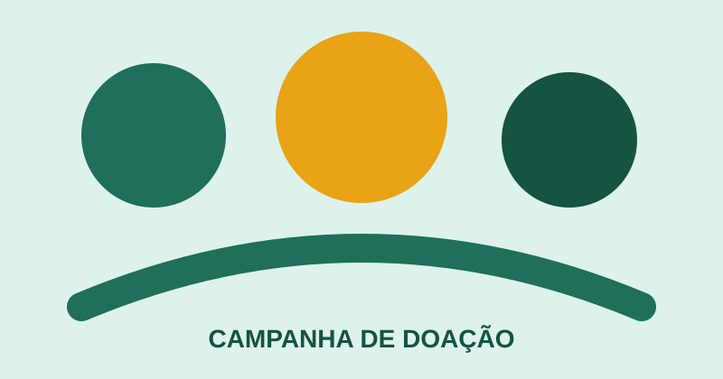
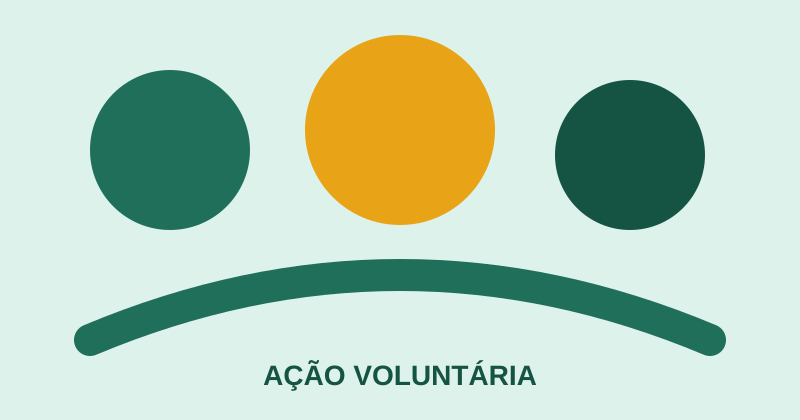

DoaçãoProjeto ativo
Campanhas de doação
Arrecadamos alimentos, roupas e recursos financeiros para apoiar ações comunitárias.
- Doações financeiras
- Alimentos não perecíveis
- Roupas e itens essenciais
Nossas iniciativas
Conheça nossas frentes de atuação e escolha como você gostaria de contribuir.
Projetos ativos

Arrecadamos alimentos, roupas e recursos financeiros para apoiar ações comunitárias.

Voluntários podem colaborar em eventos, campanhas, comunicação e apoio logístico.
Preencha o cadastro com seus dados e indique a forma de participação desejada.
Transparência
As informações de participação ajudam a equipe a direcionar contatos e oportunidades de forma adequada.